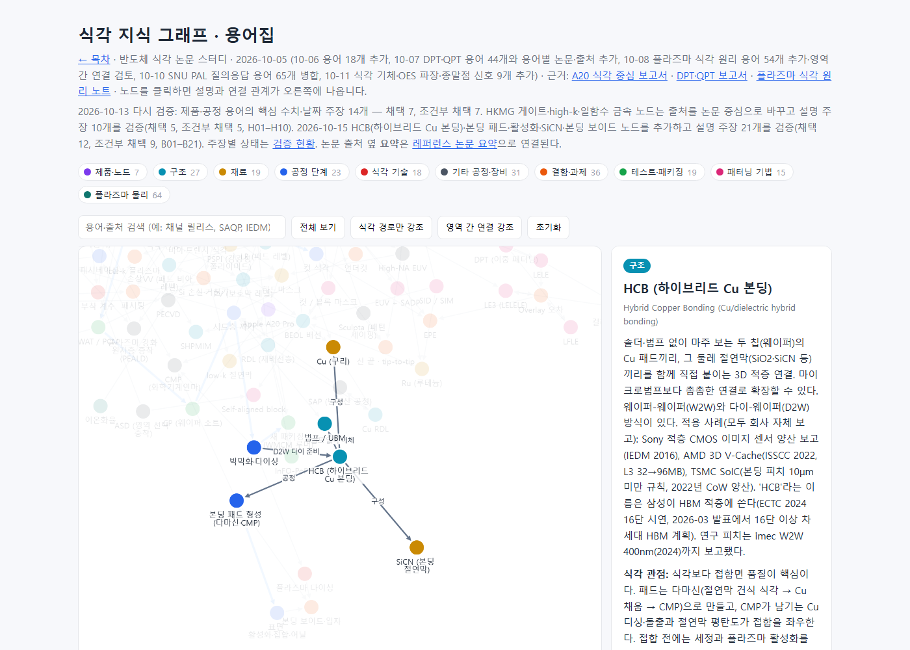
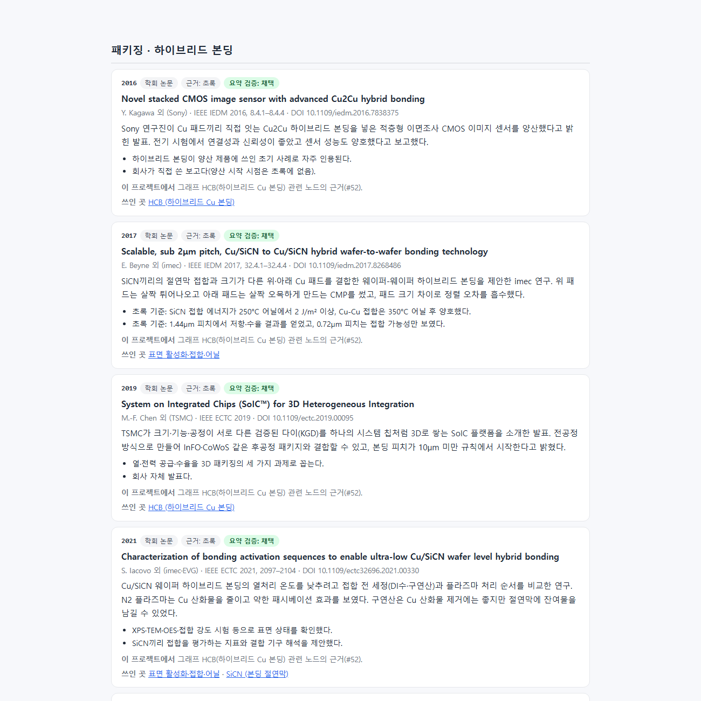
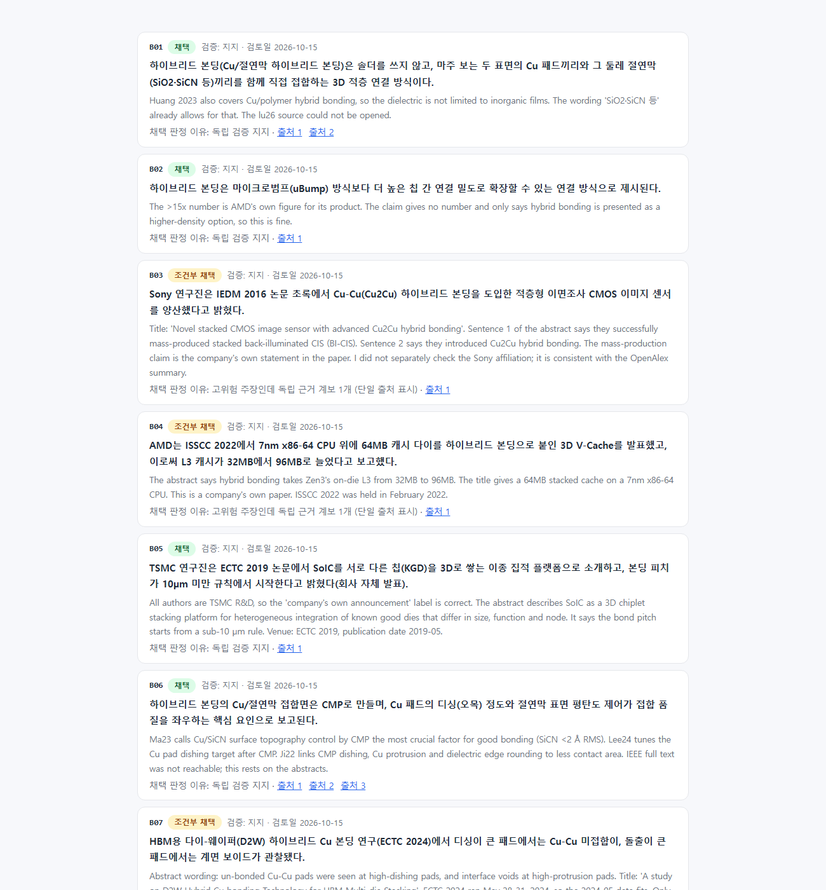

#52
지식 그래프에 HCB(하이브리드 Cu 본딩) 내용 추가
지시 (원문)
HCB 내용 추가
분석 (Claude의 정리)
- 저장소에는 "HCB"라는 말이 없다. 반도체에서 HCB는 보통 Hybrid Copper Bonding(Cu/절연막 하이브리드 본딩)이다. 이 뜻으로 보고, 식각 지식 그래프의 BEOL·패키징 영역(RDL·범프·다이싱·플라즈마 다이싱·Cu·CMP 노드가 있는 곳)에 넣는다. 이 해석은 나중에 근거로 확인됐다(삼성 계열 ECTC 2024 논문과 2026-03 삼성 발표가 이 기술을 "HCB"라고 부른다).
- 식각 관점에서 볼 곳은 다음과 같다: 본딩 패드 다마신 식각, CMP가 남기는 Cu 디싱·돌출, 접합 전 플라즈마 활성화, D2W의 다이싱 입자와 플라즈마 다이싱.
- 새 사실이므로 검증 절차(장부 → 독립 검증 → gate)를 거쳐 채택·조건부 주장만 그래프에 넣는다. 새로 인용하는 논문은 #51 규칙대로 요약도 만든다.
과정
- 범위와 기록 단계를 jev에게 물었다.
· 범위(4개 선택지): "그래프에 HCB 노드와 관련 공정·식각 노드 몇 개를 출처와 함께 추가"를 골랐다(확률 0.96, 신뢰도 0.95). 그대로 따랐다.
· 기록 단계: 새 12단계를 골랐다(0.59, 11단계 0.41, 신뢰도 0.18). 신뢰도는 낮지만, 구조 재정비와 성격이 다른 리서치라 새 단계(12. 패키징·본딩 리서치)를 만들었다.
· "뜻을 먼저 사용자에게 확인해야 하는가": 0.32로 낮아 바로 진행했다. - 후보 출처를 따로 모았다.
· astra(high, 백그라운드): 정의·공정 흐름, 식각·플라즈마 단계, 피치, 산업 적용(날짜 종류 구분)을 물었다.
·lit_search.py: 7개 질의(활성화, D2W 플라즈마 다이싱, Cu 리세스·팽창, 미세 피치 W2W, SiCN, CIS, HBM)로 메타데이터를 찾았다.
· Crossref: 대표 논문(Sony IEDM 2016, AMD ISSCC 2022, TSMC SoIC ECTC 2019, imec 400nm 등)의 DOI를 찾았다.
· OpenAlex: 초록을 확인했다. - 장부
ledger/hcb.json(비공개)에 주장 16개(B01–B16)를 적었다.
· lint 1차: 수치 4개에 적용 조건이 없다는 경고가 나와 "연구 시험 구조", "회사 자체 발표" 같은 조건을 붙였다(경고 0).
·check_refs: DOI 14개 모두 실재.
· 작성 과정을 모르는claim-verifier4개에 blind 입력만 4개씩 넘겼다. 이때 검증 요청문 하나에 출처 이름표를 잘못 옮겨 적었다(DOI는 맞음). 검증자가 이를 지적했고, 판정은 DOI 기준이라 영향이 없었다. - astra 결과를 받았다. 식각과 직접 닿는 근거를 더 가져왔다.
· 패드 단일 다마신 순서(Commun. Eng. 2026 공개 원문)
· Cu 리세스 5nm 미만 요구(ECS JSS 2024)
· imec 비대칭 패드(IEDM 2017)
· 삼성 2026-03 발표의 "HCB" 용어
· TSMC 2022 연례보고서의 SoIC CoW 양산
astra 지적 반영: "Cu 패드를 둘 다 오목하게"는 너무 좁다(한쪽을 살짝 튀어나오게 하는 방식도 있음). 플라즈마 다이싱은 입자를 줄이지만 "입자 0"을 보인 것은 아니다. 감광막 플라즈마 제거를 descum이나 접합 활성화로 부르면 안 된다. 주장 5개(B17–B21)를 추가하고 검증자 1개에 넘겼다. - 1차 gate 결과(B01–B16): 채택 9, 조건부 7. 검증자 지적은 세 가지였다.
· B03(Sony 양산 보고): 검증자가 초록을 열지 못했다. 또 "자체 개발"은 외부 기술(DBI) 라이선스 보도와 충돌한다.
· B05(SoIC): "로직-로직·메모리-로직" 표현을 초록에서 찾지 못했다.
· B09(어닐 중 Cu 팽창으로 접합): 1µm 미만 피치·저온에서는 Cu 표면 확산(bulge-out)이 주도한다는 2026 발표가 있다.
세 문장을 고치고(B03에는 초록 위치를 적음) 새 검증자에게 다시 넘겼다. 다시 검증한 결과 세 개 모두 지지였다. - 검증자 판정에 따라 B17–B19도 조건부가 됐다. 그래프 문장에 조건을 그대로 넣었다.
· B17: O2 플라즈마는 감광막 제거에만 쓰였고 세정은 습식(RCA-1)이었다. CMP 전에 열처리가 있었다.
· B18: 1.44µm 피치는 검증자가 원문으로 확인하지 못했다. 그래서 그래프에는 제목에 있는 "2µm 미만"만 썼다.
· B19: 리세스 5nm 미만은 그 연구가 목표로 한 값이 아니라, 1µm 미만 피치 접합에 필요하다고 논문이 제시한 요구 조건이다.
최종 gate: 주장 21개 — 채택 12, 조건부 채택 9, 보류·제외 0. 조건부 9개 중 6개는 "회사 자체 보고·단일 출처"라는 이유였다(Sony·AMD·삼성·Micron·TSMC). - #51 규칙대로 새로 인용하는 논문 15편의 요약을
kb/papers/papers.json에 썼다. 새 영역은 "패키징 · 하이브리드 본딩"이다. 핵심 문장 15개를 검증자 2개에 넘긴 결과는 채택 14, 조건부 1(Ji 2022: 디싱 균일성은 슬러리 영향의 하나가 아니라 연구 목표)이다. 레퍼런스 논문은 43편에서 58편이 됐다. - 그래프 원본(
kb/graph/)에 노드 5개, 관계 10개, 출처 17개를 추가했다.
· 노드: HCB(하이브리드 Cu 본딩), 본딩 패드 형성(다마신·CMP), 표면 활성화·접합·어닐, SiCN(본딩 절연막), 본딩 보이드·입자
· 관계: Cu·SiCN 구성, 범프 없이 대체, 공정 순서, CMP 사용, 위험, 플라즈마 다이싱 → 입자 줄임(D2W), 박막화·다이싱 → D2W 다이 준비
그래프에는 채택·조건부 주장만 넣었다. 회사 보고는 "회사 자체 보고"로 표시했다. 검증자가 열지 못한 리뷰(JEDS 2026)와 시뮬레이션 논문은 출처에서 뺐다. - 공개 상태를 내보냈다(
claims_export.py→kb/claims/hcb.json). 그래프 안내 문구와 검증 현황 소개를 고친 뒤 build했다.
· 검증 현황: 주장 115개
· 그래프: 노드 259개, 관계 561개
· 논문 요약: 58편
점검 결과:build_site.py --check일치, 링크 검사 28개 페이지 문제 0,paper_links.py check빠진 곳 0. - 로컬 서버에서 스크린샷을 찍었다. 요약 페이지와 검증 현황은
#앵커주소로 찍으면 빈 화면이 나왔다(#51 때와 같음). 대상 앞 내용을 지우는 캡처용 사본을 비공개 작업 폴더에 만들어 다시 찍었다. - 커밋·푸시 → GitHub Actions
site-check통과, Pages 빌드 완료.<계정>.github.io/etch-paper-study/의 그래프(HCB 출처 포함)·논문 요약·검증 현황(B01–B21)·12단계 기록·스크린샷 모두 200 확인.
결과 / 증거
성공 식각 지식 그래프의 BEOL·패키징 영역에 HCB와 관련 노드 4개를 추가했다. 접합 품질을 좌우하는 패드 다마신·CMP, 플라즈마 활성화, 다이싱 입자·플라즈마 다이싱을 기존 Cu·CMP·범프·다이싱 노드와 연결했다.
- 검증:
· 그래프 설명 주장 21개: 채택 12, 조건부 9
· 새 논문 요약 15편: 채택 14, 조건부 1
고쳐서 다시 검증한 주장은 3개였다. - 적용 사례는 모두 회사가 스스로 보고한 것이라 그렇게 표시했다: Sony(2016 양산 보고), AMD 3D V-Cache(2022), TSMC SoIC(2022 CoW 양산), 삼성 HCB(2024 16단 시연, 2026 계획). 삼성 발표는 계획이며 출하 근거가 아니다.
- 남은 한계:
· IEEE 원문은 대부분 유료여서 초록 기준으로 판정했다.
· 패드 식각의 가스 조건은 공개 논문에 없다.
· imec 2017의 1.44µm 피치는 초록에는 있지만 검증자가 확인하지 못해 그래프에 쓰지 않았다.
HCB 노드 열기 → · 검증 현황(B01–B21) → · 논문 요약: 패키징 →


